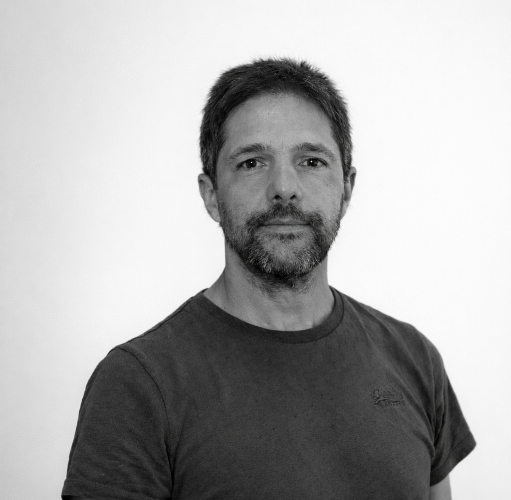

Solar Physics
& Neutrinos
Standard solar models, helioseismology and solar neutrinos as complementary probes of the solar interior.
Explore this area →Combining stellar models with spectroscopy, asteroseismology and nuclear astrophysics experiments to explore the physics inside stars.

I am an astrophysicist working in stellar and solar physics at the Institute of Space Sciences (ICE-CSIC) in Barcelona, where I have served as Director since 2023. Much of my work focuses on the Sun: standard solar models, helioseismology and solar neutrinos.
I also use stellar models to interpret asteroseismic and spectroscopic observations, improving estimates of stellar ages and fundamental parameters for Galactic, stellar and exoplanet research.
My work aims at keeping stellar models as simple as possible while remaining consistent with the quality and precision of modern data.
Biography & career →Standard solar models, helioseismology and solar neutrinos as complementary probes of the solar interior.
Explore this area →Stellar structure and evolution, using seismic and spectroscopic observations to constrain ages and fundamental parameters.
Explore this area →Connecting stellar ages and chemical abundances to the evolution of stellar populations and the Milky Way.
Explore this area →